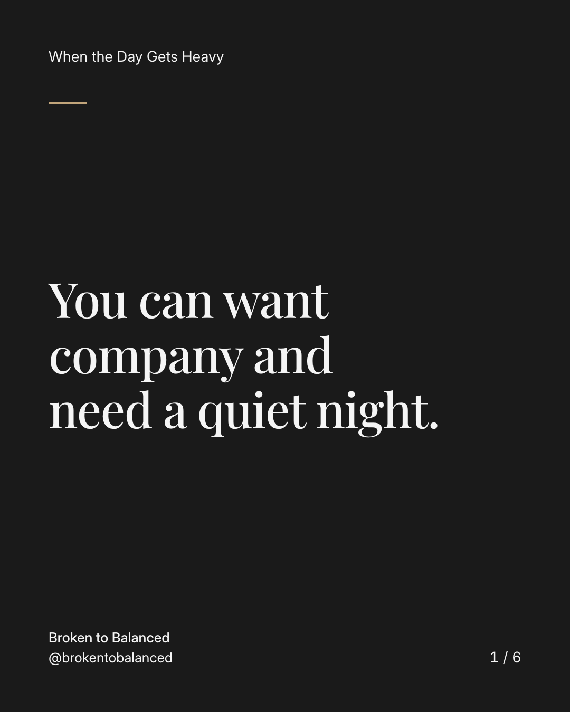
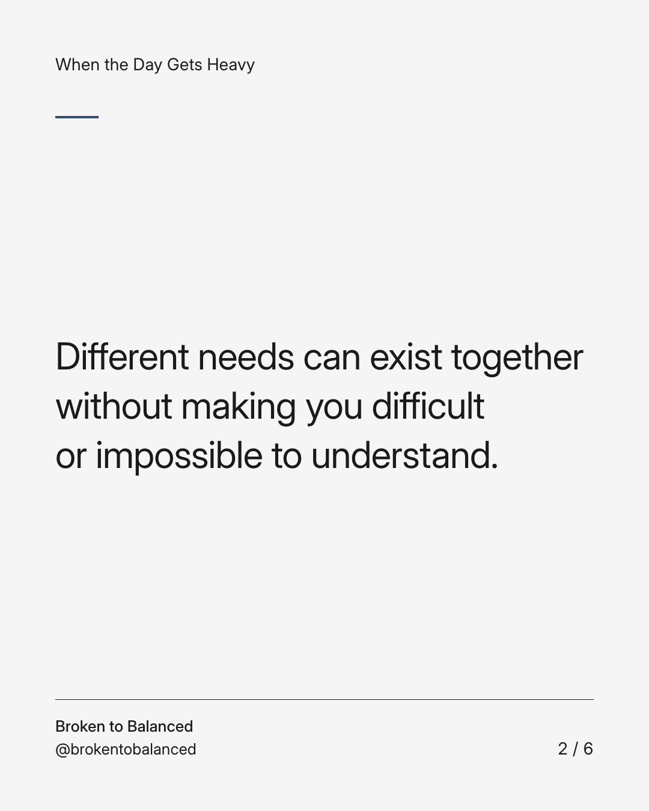
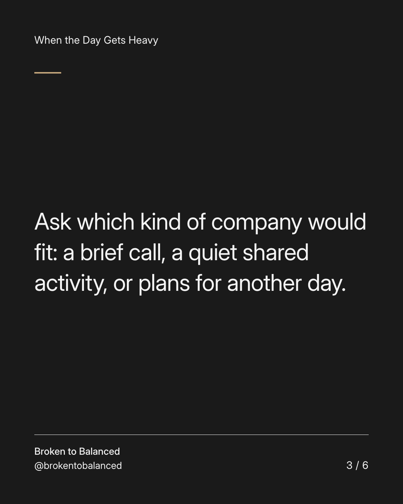
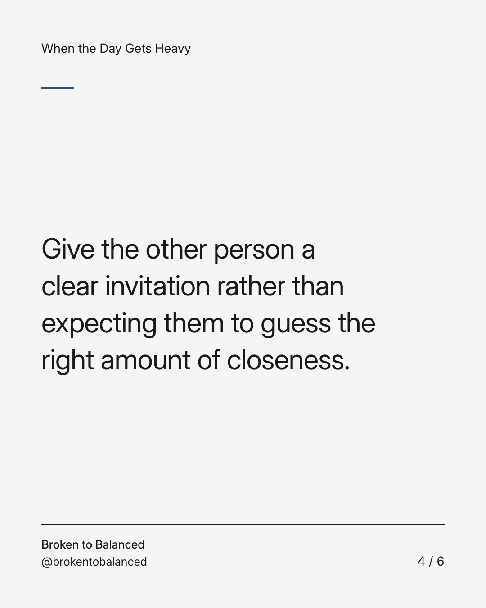
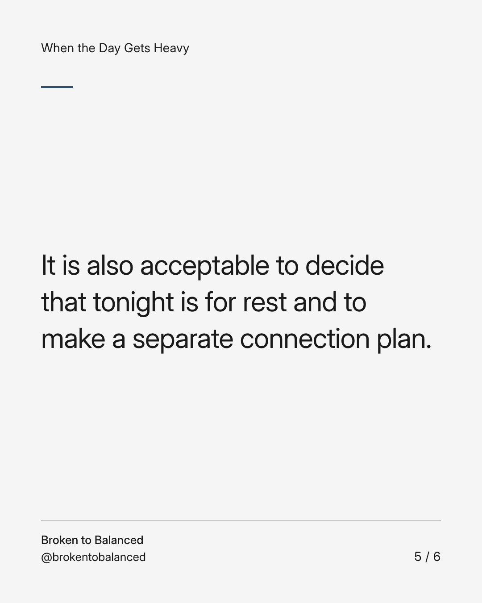
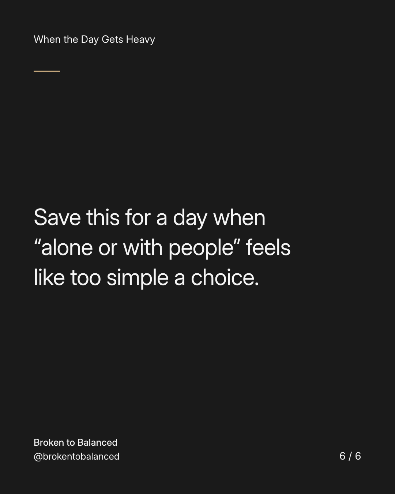

Exact text and accessibility text
You can want company and need a quiet night.
Slide 1 of 6. You can want company and need a quiet night.


Exact text and accessibility text
Different needs can exist together without making you difficult or impossible to understand.
Slide 2 of 6. Different needs can exist together without making you difficult or impossible to understand.


Exact text and accessibility text
Ask which kind of company would fit: a brief call, a quiet shared activity, or plans for another day.
Slide 3 of 6. Ask which kind of company would fit: a brief call, a quiet shared activity, or plans for another day.


Exact text and accessibility text
Give the other person a clear invitation rather than expecting them to guess the right amount of closeness.
Slide 4 of 6. Give the other person a clear invitation rather than expecting them to guess the right amount of closeness.


Exact text and accessibility text
It is also acceptable to decide that tonight is for rest and to make a separate connection plan.
Slide 5 of 6. It is also acceptable to decide that tonight is for rest and to make a separate connection plan.


Exact text and accessibility text
Save this for a day when “alone or with people” feels like too simple a choice.
Slide 6 of 6. Save this for a day when “alone or with people” feels like too simple a choice.
Exact caption
Plain-text fallback: select and copy the caption.